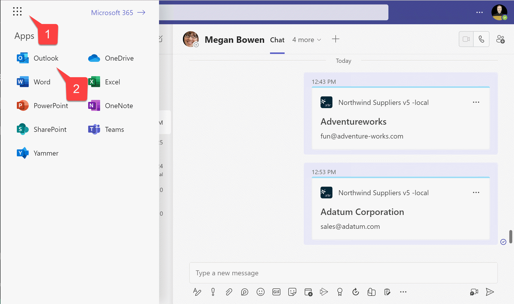
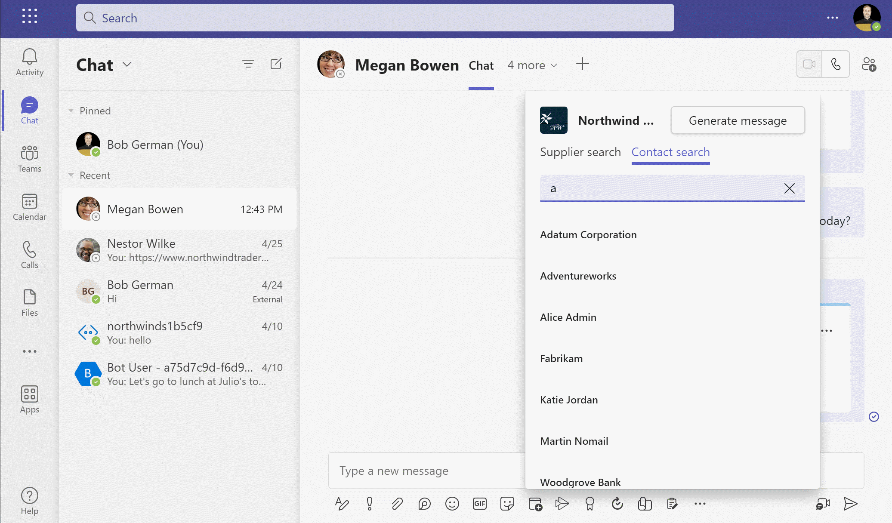
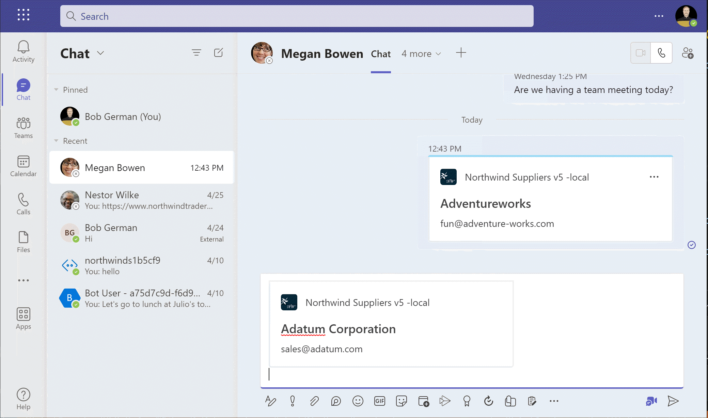

Lab 5: Single Sign-on and Microsoft Graph
Lab Outline
- Lab 1 - Create your first app with Teams Toolkit In this lab, you'll set up Teams Toolkit and create a Teams message extension.
- Lab 2 - Integrate business data with your application In this lab, you'll brand your new app as "Northwind Suppliers", and will provide the ability to insert data from the Northwind Traders sample database in a Microsoft Teams conversation. You'll also learn how to create and send adaptive cards with your message extension.
- Lab 3 - Add link unfurling In this lab, you'll learn how to use Link Unfurling, which provides a custom summary when a user includes your URL in a conversation
- Lab 4 - Action message extensions with Open AI In this lab, you'll learn how to build "Action" message extensions which can be launched directly or in the context menu of another Teams message to take action on it. The labs use the Open AI commercial web services (in Azure or using an Open AI account) to generate messages.
 Lab 5 - Single Sign-on and Microsoft Graph__
In this lab, you'll learn how to authenticate users with Azure AD Single Sign-On, and to call the
Microsoft Graph API. This same process would be used when calling any
web service that's secured with Azure AD on behalf of the logged-in user.
Lab 5 - Single Sign-on and Microsoft Graph__
In this lab, you'll learn how to authenticate users with Azure AD Single Sign-On, and to call the
Microsoft Graph API. This same process would be used when calling any
web service that's secured with Azure AD on behalf of the logged-in user.- Lab 6 - Run the app in Outlook In this lab, you'll run the Northwind Suppliers application in Microsoft Outlook.
Overview
In this lab you will learn to:
- Add Azure Active Directory single sign-on (SSO) to your app so users can seamlessly log into your app with the same account they use in Microsoft Teams
- Access a REST service that's secured with Azure Active Directory from a Teams message extension or bot
- Access the Microsoft Graph API to access user content in Microsoft 365. Your app will act on behalf of the logged-in user so they can securely access their own content within your application.
Features
In this lab, you'll build a Search message extension that queries a user's personal contact list and allows them to share a contact in a Teams conversation.
Exercise 1: Set up your project for Azure AD Single Sign-on
Applications secured with Azure Active Directory must be registered and granted permission. Teams Toolkit will do this work for you, but you have to update your project to make that happen. In this exercise, you'll modify the Teams Toolkit project files to provision your app registration in Azure AD.
More information
Step 1: Add an Azure AD App manifest file to define the Azure AD Application
In this step, you'll add a file that defines the application that Teams Toolkit will register for your application. The AAD manifest allows you to customize various aspects of your application registration. For example, this one sets up contacts.read permission on the Microsoft Graph API so your app can read the user's contacts.
Create a file aad.manifest.json in the root of your project folder, and paste in this JSON:
{
"id": "${{AAD_APP_OBJECT_ID}}",
"appId": "${{AAD_APP_CLIENT_ID}}",
"name": "NorthwindSuppliers-AAD",
"accessTokenAcceptedVersion": 2,
"signInAudience": "AzureADMyOrg",
"optionalClaims": {
"idToken": [],
"accessToken": [
{
"name": "idtyp",
"source": null,
"essential": false,
"additionalProperties": []
}
],
"saml2Token": []
},
"requiredResourceAccess": [
{
"resourceAppId": "Microsoft Graph",
"resourceAccess": [
{
"id": "Contacts.Read",
"type": "Scope"
}
]
}
],
"oauth2Permissions": [
{
"adminConsentDescription": "Allows Teams to call the app's web APIs as the current user.",
"adminConsentDisplayName": "Teams can access app's web APIs",
"id": "${{AAD_APP_ACCESS_AS_USER_PERMISSION_ID}}",
"isEnabled": true,
"type": "User",
"userConsentDescription": "Enable Teams to call this app's web APIs with the same rights that you have",
"userConsentDisplayName": "Teams can access app's web APIs and make requests on your behalf",
"value": "access_as_user"
}
],
"preAuthorizedApplications": [
{
"appId": "1fec8e78-bce4-4aaf-ab1b-5451cc387264",
"permissionIds": [
"${{AAD_APP_ACCESS_AS_USER_PERMISSION_ID}}"
]
},
{
"appId": "5e3ce6c0-2b1f-4285-8d4b-75ee78787346",
"permissionIds": [
"${{AAD_APP_ACCESS_AS_USER_PERMISSION_ID}}"
]
},
{
"appId": "d3590ed6-52b3-4102-aeff-aad2292ab01c",
"permissionIds": [
"${{AAD_APP_ACCESS_AS_USER_PERMISSION_ID}}"
]
},
{
"appId": "00000002-0000-0ff1-ce00-000000000000",
"permissionIds": [
"${{AAD_APP_ACCESS_AS_USER_PERMISSION_ID}}"
]
},
{
"appId": "bc59ab01-8403-45c6-8796-ac3ef710b3e3",
"permissionIds": [
"${{AAD_APP_ACCESS_AS_USER_PERMISSION_ID}}"
]
},
{
"appId": "0ec893e0-5785-4de6-99da-4ed124e5296c",
"permissionIds": [
"${{AAD_APP_ACCESS_AS_USER_PERMISSION_ID}}"
]
},
{
"appId": "4765445b-32c6-49b0-83e6-1d93765276ca",
"permissionIds": [
"${{AAD_APP_ACCESS_AS_USER_PERMISSION_ID}}"
]
},
{
"appId": "4345a7b9-9a63-4910-a426-35363201d503",
"permissionIds": [
"${{AAD_APP_ACCESS_AS_USER_PERMISSION_ID}}"
]
}
],
"identifierUris": [
"api://botid-${{BOT_ID}}"
],
"replyUrlsWithType": [
{
"url": "https://${{BOT_DOMAIN}}/auth-end.html",
"type": "Web"
}
]
}
Step 2: Update Teams Toolkit configuration file to create the Azure AD App
Open the teamsapp.local.yml file. This is a YAML file that defines the steps Teams Toolkit takes to run your project. These steps are done 3 steps, as shown in the "LIFECYCLE" section of the Teams Toolkit user interface.
-
Provision - In this phase, any infrastructure needed by your app is provisioned. This includes things like the bot registration, the Teams app package, and, in this case, the Azure AD app registration
-
Deploy - In this phase, the code is built and run locally, or uploaded to Azure for environments other than "local"
-
Publish - In this phase, the app package is published to Microsoft Teams
To provision your Azure AD app, add these lines to teamsapp.local.yml. You can put them directly below the provision: line; if you know YAML you can put them anywhere before the [teamsApp/validateManifest] directive, since the Azure AD application information is needed in validating the manifest.
- uses: aadApp/create
with:
name: "NorthwindSuppliers-AAD"
generateClientSecret: true
signInAudience: "AzureADMyOrg"
writeToEnvironmentFile:
clientId: AAD_APP_CLIENT_ID
clientSecret: SECRET_AAD_APP_CLIENT_SECRET
objectId: AAD_APP_OBJECT_ID
tenantId: AAD_APP_TENANT_ID
authority: AAD_APP_OAUTH_AUTHORITY
authorityHost: AAD_APP_OAUTH_AUTHORITY_HOST
- uses: aadApp/update
with:
manifestPath: "./aad.manifest.json"
outputFilePath : ./build/aad.manifest.${{TEAMSFX_ENV}}.json
Indentation can be tricky in YAML
YAML requires proper indentation; each level in the object hierarchy must be indented to indicate the structure. 2 spaces (not tabs) is a good choice. Visual Studio Code will help you here, and will underline any syntax errors in red. You'll know you got it right when the red lines disappear!
Now scroll down and find the file/createOrUpdateEnvironmentFile directive in the deploy phase. Add these variables to the envs: collection, right below the ones you added in the previous lab:
M365_CLIENT_ID: ${{AAD_APP_CLIENT_ID}}
M365_CLIENT_SECRET: ${{SECRET_AAD_APP_CLIENT_SECRET}}
M365_TENANT_ID: ${{AAD_APP_TENANT_ID}}
INITIATE_LOGIN_ENDPOINT: ${{BOT_ENDPOINT}}/auth-start.html
M365_AUTHORITY_HOST: ${{AAD_APP_OAUTH_AUTHORITY_HOST}}
M365_APPLICATION_ID_URI: api://botid-${{BOT_ID}}
Exercise 2: Update your Teams app manifest for SSO
In the single sign-on process, Teams will hand your code an Azure AD access token for your application. This access token can be used to authorize calls to your own back-end service(s), or it can be exchanged for an access token that's used with another back-end service such as the Microsoft Graph.
Teams can't provide this access token, however, unless it knows about your application; specifically, it needs to know the application (client) ID and the ID of the bot that's connected to Teams. So you need to add this information to your Teams app manifest.
Find the Teams app manifest template in ./appPackage/manifest.json and add the following:
"webApplicationInfo": {
"id": "${{AAD_APP_CLIENT_ID}}",
"resource": "api://botid-${{BOT_ID}}"
}
Add it below the "validDomains" object, with a comma in between.
While we're here, we need to tell Teams to display web pages from your bot's domain, which allows access to the auth-start.html and auth-end.html pages used for user consent to call the Microsoft Graph. This only happens the first time a user accesses the message extension.
So you need to add your bot's domain, ${{BOT_DOMAIN}} to the validDomains array.
After making these changes, the end of your manifest.json file should look like this:
"validDomains": [ "adaptivecards.io", "${{BOT_DOMAIN}}"
],
"webApplicationInfo": {
"id": "${{AAD_APP_CLIENT_ID}}",
"resource": "api://botid-${{BOT_ID}}"
}
}
Exercise 3: (Optional) Update the project for Azure deployment
If you want to be able to deploy your project to Microsoft Azure, you'll need to make a few more changes so Teams Toolkit will set up SSO there as well as for your local environment. If you don't plan to deploy to Microsoft Azure, you can skip to the next exercise.
Step 1: Update Teams Toolkit configuration file to create the Azure AD App during Azure deployment
Open the teamsapp.yml file. This is a YAML file that defines the steps Teams Toolkit takes when provisioning your project in Microsoft Azure. You'll make the same modifications here that you made in teamsapp.local.yml earlier.
Specifically, you need to add these lines to teamsapp.yml. You can put them directly below the provision: line; if you know YAML you can put them anywhere before the [teamsApp/validateManifest] directive, since the Azure AD application information is needed in validating the manifest.
- uses: aadApp/create
with:
name: "NorthwindSuppliers-AAD"
generateClientSecret: true
signInAudience: "AzureADMyOrg"
writeToEnvironmentFile:
clientId: AAD_APP_CLIENT_ID
clientSecret: SECRET_AAD_APP_CLIENT_SECRET
objectId: AAD_APP_OBJECT_ID
tenantId: AAD_APP_TENANT_ID
authority: AAD_APP_OAUTH_AUTHORITY
authorityHost: AAD_APP_OAUTH_AUTHORITY_HOST
- uses: aadApp/update
with:
manifestPath: "./aad.manifest.json"
outputFilePath : ./build/aad.manifest.${{TEAMSFX_ENV}}.json
Step 2: Add Azure AD configuration values to the Azure parameters file
Open the infra/azure.parameters.json file and add these properties to the parameters object. Remember to add a comma after the "botDisplayName" property to separate it from these new properties.
"m365ClientId": {
"value": "${{AAD_APP_CLIENT_ID}}"
},
"m365ClientSecret": {
"value": "${{SECRET_AAD_APP_CLIENT_SECRET}}"
},
"m365TenantId": {
"value": "${{AAD_APP_TENANT_ID}}"
},
"m365OauthAuthorityHost": {
"value": "${{AAD_APP_OAUTH_AUTHORITY_HOST}}"
}
Step 3: Update the Bicep file
Teams Toolkit uses Bicep to deploy applications to Microsoft Azure. In this step, you'll update the bicep file to set the Azure AD settings in the Azure App Service that will host your application.
Open the infra/azure.bicep file and find this line:
param location string = resourceGroup().location
Add these lines below that line.
param m365ClientId string
param m365TenantId string
param m365OauthAuthorityHost string
param m365ApplicationIdUri string = 'api://botid-${botAadAppClientId}'
@secure() param m365ClientSecret string
Now scroll to the bottom of the bicep file; notice the output lines are at the bottom. Just before them, insert the following lines to set the properties of the app service:
resource webAppSettings 'Microsoft.Web/sites/config@2021-02-01' = {
name: '${webAppName}/appsettings'
properties: {
M365_CLIENT_ID: m365ClientId
M365_CLIENT_SECRET: m365ClientSecret
INITIATE_LOGIN_ENDPOINT: uri('https://${webApp.properties.defaultHostName}', 'auth-start.html')
M365_AUTHORITY_HOST: m365OauthAuthorityHost
M365_TENANT_ID: m365TenantId
M365_APPLICATION_ID_URI: m365ApplicationIdUri
BOT_ID: botAadAppClientId
BOT_PASSWORD: botAadAppClientSecret
RUNNING_ON_AZURE: '1'
}
}
Exercise 4: Update the application code for SSO
In this exercise, you'll modify the code to accomodate the SSO process. These steps would be used for any message extension; the new functionality to share personal contacts will be added in Exercise 5.
Step 1: Provide HTML pages for the consent dialog
The first time a user accesses your application, they may need to consent to giving the app permission to read their personal contacts. This is performed by the TeamsFx library, which we'll add shortly. TeamsFx will display a pop-up window; these HTML pages are to be displayed in that pop-up, and will redirect to Azure AD to do the actual consent.
Create a new folder at the project root called public.
Create a file auth-start.html and paste in the contents from Teams Toolkit
Create a file auth-end.html and paste in the contents from Teams Toolkit
Quick way to copy from Github
There is a "Copy raw contents" button in the upper left corner that will copy the file contents with one click.

Step 2: Install packages
The application will use two npm packages as part of the SSO process: * isomorphic-fetch - This is used to make a web service call to Azure Active Directory when exchanging the app's own access token for a Microsoft Graph access token * @microsoft/teamsfx - This package will simplify the SSO code, and handle launching the consent dialog if needed
Enter the following command line in the root of your project folder.
npm install @microsoft/teamsfx isomorphic-fetch
Step 3: Update your index.js file to handle SSO interactions
Open the index.js file; this is the main entry point for your bot's web service. Add these lines at the top:
require("isomorphic-fetch");
const path = require("path");
Find the code which handles messages for the bot:
// Listen for incoming requests.
server.post("/api/messages", async (req, res) => {
await adapter.process(req, res, async (context) => {
await bot.run(context);
});
});
Replace this code with the following. The new code adds the ability to detect a [412] ;HTTP status code, "Precondition not met", which is thrown within TeamsFx if the user has not consented to the permissions requested. This is the situation that triggers the consent dialog to appear, and our code must not catch that error or execution will stop and the dialog code in TeamsFx won't run.
The new code also adds a get request handler to serve up the authentication HTML pages we added earlier.
// Listen for incoming requests.
server.post("/api/messages", async (req, res) => {
await adapter.process(req, res, async (context) => {
await bot.run(context);
}).catch((err) => {
// Error message including "412" means it is waiting for user's consent, which is a normal process of SSO, shouldn't throw this error.
if(!err.message.includes("412")) {
throw err;
}
})
});
server.get(
"/auth-:name(start|end).html",
restify.plugins.serveStatic({
directory: path.join(__dirname, "public"),
})
);
Exercise 5: Add the Contacts message extension
Now that we've laid the groundwork for single sign-on, we'll implement the new Contacts message extension, which calls the Microsoft Graph API to access the user's personal contacts so they can share them in Teams.
Step 1: Add the Contacts message extension code
Add a new file, contactME.js within the messageExtensions directory, and paste in this code:
const axios = require("axios");
const ACData = require("adaptivecards-templating");
const { CardFactory } = require("botbuilder");
const {
createMicrosoftGraphClientWithCredential,
OnBehalfOfUserCredential,
handleMessageExtensionQueryWithSSO
} = require("@microsoft/teamsfx");
require("isomorphic-fetch");
const oboAuthConfig = {
authorityHost: process.env.M365_AUTHORITY_HOST,
clientId: process.env.M365_CLIENT_ID,
tenantId: process.env.M365_TENANT_ID,
clientSecret: process.env.M365_CLIENT_SECRET,
};
const initialLoginEndpoint = process.env.INITIATE_LOGIN_ENDPOINT;
class ContactME {
// Get contacts given a query
async handleTeamsMessagingExtensionQuery (context, query) {
return await handleMessageExtensionQueryWithSSO(context, oboAuthConfig, initialLoginEndpoint,
"Contacts.Read",
async (token) => {
return await this.#queryContacts(context, query, token);
});
}
// Get contacts given a query and an access token for the Microsoft Graph
async #queryContacts (context, query, token) {
try {
// Init OnBehalfOfUserCredential instance with SSO token
const credential = new OnBehalfOfUserCredential(token.ssoToken, oboAuthConfig);
// Add scope for your Azure AD app. For example: Mail.Read, etc.
const graphClient = createMicrosoftGraphClientWithCredential(credential, "Contacts.Read");
// Call graph api use `graph` instance to get user profile information.
const response = await graphClient.api("/me/contacts?$select=id,displayName,emailAddresses").get();
// Since Graph doesn't allow sorting and filtering of contacts, do it here
// TODO: Handle multiple pages of contacts
let contacts = response.value.filter( contact =>
contact.displayName.toLowerCase().includes(query.toLowerCase()));
// Sort contacts by display name
contacts = contacts.sort((a, b) => (a.displayName > b.displayName) ? 1 : -1);
const attachments = [];
contacts.forEach((contact) => {
const itemAttachment = CardFactory.heroCard(contact.displayName,);
const previewAttachment = CardFactory.thumbnailCard(contact.displayName);
previewAttachment.content.tap = {
type: "invoke",
value: { // Values passed to selectItem when an item is selected
queryType: 'contactME',
id: contact.id,
displayName: contact.displayName,
email: contact.emailAddresses[0]?.address
},
};
const attachment = { ...itemAttachment, preview: previewAttachment };
attachments.push(attachment);
});
return {
composeExtension: {
type: "result",
attachmentLayout: "list",
attachments: attachments,
}
};
} catch (error) {
console.log(error);
}
};
handleTeamsMessagingExtensionSelectItem (context, item) {
const resultCard = CardFactory.heroCard(item.displayName, item.email);
return {
composeExtension: {
type: "result",
attachmentLayout: "list",
attachments: [resultCard]
},
};
};
}
module.exports.ContactME = new ContactME();
Code walk-through
Take a moment to examine the code you just added.
The handleTeamsMessagingExtensionQuery() function is called when a user enters a query into the message extension. To satisfy this request, we need an access token, so we return a call to the TeamsFx function handleTeamsMessagingExtensionQueryWithSSO(). This function takes care of the displaying a consent dialog if the user hasn't consented to the permissions.
It includes an argument, oboAuthConfig, which contains the information needed to exchange the access token provided by Teams with an access token for a web service owned by some other application (such as the Microsoft Graph). This is used by handleTeamsMessagingExtensionQueryWithSSO() and by the call toOnBehalfOfUserCredential()`, which we call to get a Graph client to call the Microsoft Graph.
Once you have the Graph client, it's simple to call the Graph API and get the list of clients. To try this and other Graph API calls interactively, try the Graph Explorer. This is a great place to start when writing code to call the Microsoft Graph.
Step 2: Modify the bot to displatch messages to the Contacts message extension
Open teamsBot.js and add calls to the contact message extension to the switch statements for query message extensions.
Near the top of the file, add a require statement to import the contact message extension module:
const { ContactME } = require("./messageExtensions/contactME");
In the handleTeamsMessagingExtensionQuery function, add another case to the switch statement:
case "contactME": // Search for contacts
return await ContactME.handleTeamsMessagingExtensionQuery(context, searchQuery);
In the handleTeamsMessagingExtensionSelectItem function, add another case to the switch statement:
case "contactME": // Search for contacts
return ContactME.handleTeamsMessagingExtensionSelectItem(context, item);
Step 3: Add the Contacts message extension to the Teams app manifest
Edit appPackage/manifest.json and add a new entry to the commands array after the replyToMessage command.
{
"id": "searchContacts",
"context": [
"compose",
"commandBox"
],
"description": "Share a contact",
"title": "Contact search",
"type": "query",
"parameters": [
{
"name": "contactME",
"title": "Contact search",
"description": "Type name or company",
"inputType": "text"
}
]
}
Note
If all the nested brackets are a bit confusing, feel free to copy the entire updated manifest.json file from here
Exercise 6: Run the application
Step 1: Enter test data
Your message extension won't be able to display contacts if you don't have any! So take a moment to ensure you've got a few contacts in Microsoft 365.
1️⃣ From Microsoft Teams, click the "waffle" menu
2️⃣ Select Microsoft Outlook

1️⃣ Within Outlook, click the "Contacts" button
2️⃣ Enter some new contacts
The app is simple, and will only display the person or company name and email address. If you want to play along with the business scenario, make them sound like suppliers.

Step 2: Run the application
Click F5, use the "Run" menu, or click the Run arrow in Teams Toolkit. When the browser opens and the installation dialog opens, add the application.

Now the message extension will have two tabs for searching.
1️⃣ Click the "Contact search" tab
2️⃣ Enter one or more letters contained in the contact names you entered in Step 1
The first time you do this, TeamsFx will realize that nobody has consented to the app permissions, and will display a message inviting you to sign in.
3️⃣ Click the sign-in link to proceed

Since you're running locally with Developer Tunnels, you'll see a warning screen. Users won't see this when your app is deployed.

Click "Continue" and you'll be redirected to Azure AD, where you'll be asked to consent to the app's permissions. (You were directed there by public/auth-start.html), which TeamsFx displayed when it found you hadn't consented). Since you're a Microsoft 365 administrator, you're also given the option to "Consent on behalf of your organization" which will consent for every user in your tenant.
Click "Accept" to consent to the permissions and run the message extension

Now you should see a list of contacts which contain the search string.

Click on one of the contacts to insert a Hero card with the contact information into the Teams conversation.

Next steps
 At this point, you've mostly completed the labs. In the next lab, you will run the Northwind Suppliers app in Microsoft Outlook. No code changes are required.
At this point, you've mostly completed the labs. In the next lab, you will run the Northwind Suppliers app in Microsoft Outlook. No code changes are required.
Congratulations!
No personal information is collected; we only want to count how many people have completed the labs so we can continue to fund this work!
Known issues
For the latest issues, or to file a bug report, see the GitHub issues list for this repository.